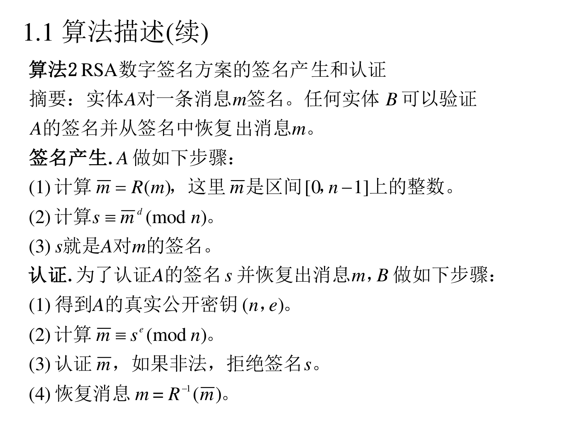
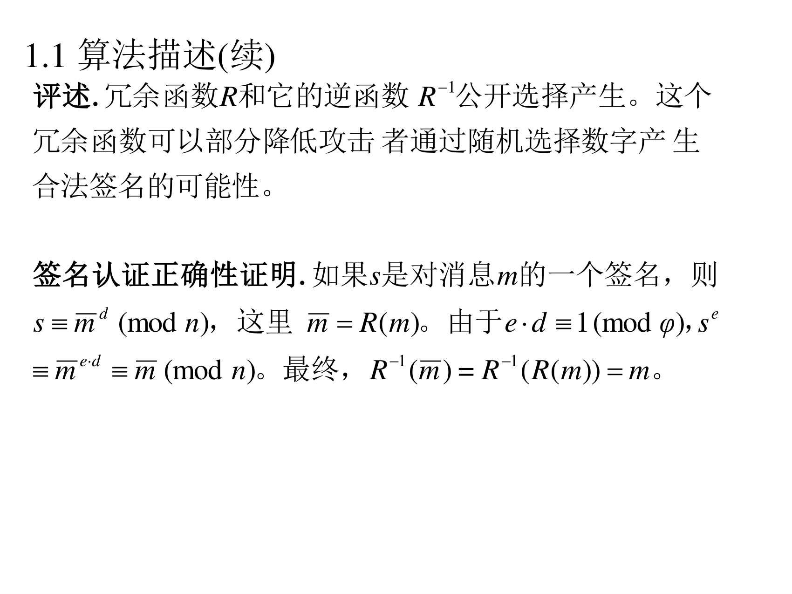

补为什么 e 要满足 (e,φ)=1：因为要保证 d 存在（模 φ 下 e 可逆的前提）。工程上常取 e=65537=216+1（见 7.1.4.3 节）。
7.1.1.2 算法 2：签名产生与认证
（PPT 第 7 页）

算法 2（RSA 数字签名方案的签名产生和认证）摘要：实体 A 对一条消息 m 签名。任何实体 B 可以验证 A 的签名并从签名中恢复出消息 m。
签名产生. A 做如下步骤：
(1) 计算 m=R(m)，这里 m 是区间 [0,n−1] 上的整数。
(2) 计算 s≡md(modn)。
(3)s 就是 A 对 m 的签名。
认证. 为了认证 A 的签名 s 并恢复出消息 m，B 做如下步骤：
(1) 得到 A 的真实公开密钥 (n,e)。
(2) 计算 m≡se(modn)。
(3) 认证 m，如果非法，拒绝签名 s。
(4) 恢复消息 m=R−1(m)。
翻译成人话（对比 RSA 加密，看清楚哪里反了）：
RSA 加密（第五讲）
RSA 签名（本讲）
用谁的钥匙
接收方的公钥加密
签名者的私钥签名
第一步
c=me
s=md
第二步
m=cd
m=se
谁能做第二步
只有接收方（有 d）
任何人（e 是公开的）
"为什么要有个 R"：这一讲的 R 叫冗余函数（redundancy function），作用是把"任意一个整数"变成"一个格式合规的整数"m。它的两个用处：
让消息符合模 n 的长度要求；
让随机伪造变难：如果直接对 m 签名，攻击者随手挑一个 s、算 m=semodn，就得到一个"合法"的 (m,s) 对（这叫存在性伪造）。加了 R 之后，se 还必须符合 R 规定的格式，随手撞上的概率极低。
7.1.1.3 评述与正确性证明
（PPT 第 8 页）

评述. 冗余函数 R 和它的逆函数 R−1 公开选择产生。这个冗余函数可以部分降低攻击者通过随机选择数字产生合法签名的可能性。
签名认证正确性证明. 如果 s 是对消息 m 的一个签名，则 s≡md(modn)，这里 m=R(m)。由于 e⋅d≡1(modφ)，se≡med≡m1(modn)。最终，R−1(m)=R−1(R(m))=m。